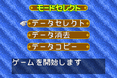

Adventure of Tokyo Disney Sea (Japan)
SRAM 256K
Cartridge Identity
- Game Code
ADEJ(FamilyADE)- Header Title
DISNEYSEA- Maker / Revision
A4/ rev0- ROM Size
- 4.0 MiB (4,194,304 B)
- Save Media
SRAM 256K- SHA-256
9b3935d8729fe469bcbc75a00a755a664235fe72c1b4054df6942388df35f045
Screenshots


Hardware MMIO Subsystems
ppu_display0x80006f4,0x8001758save_bus_sram_flash0x802199c